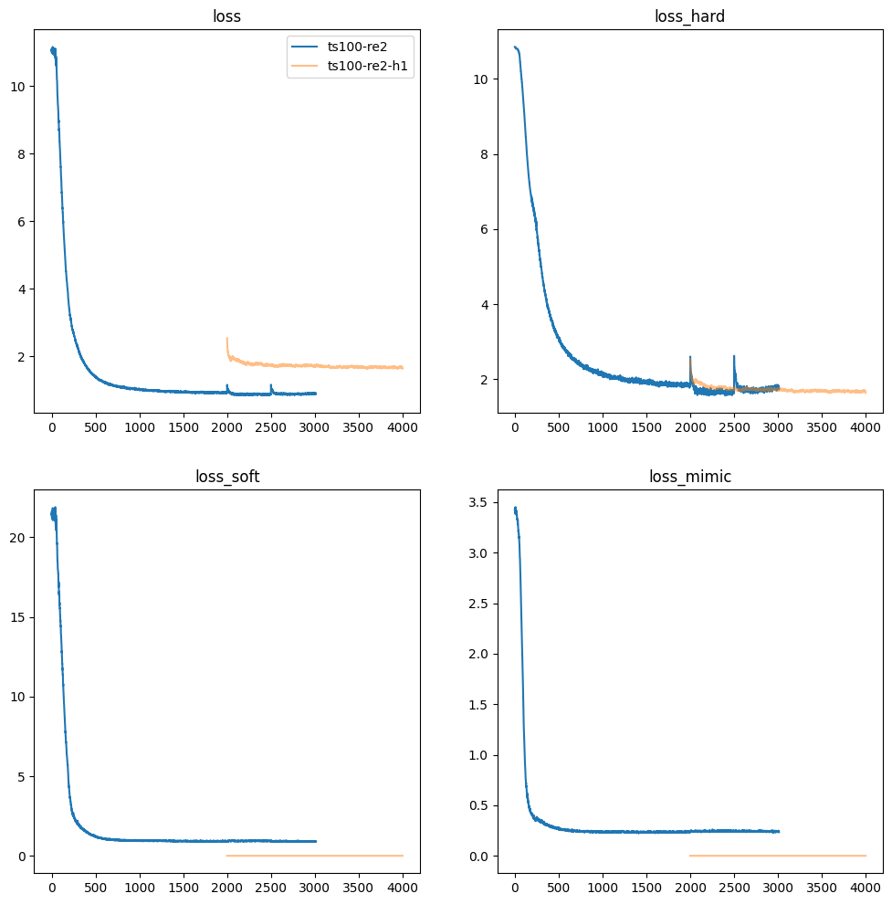
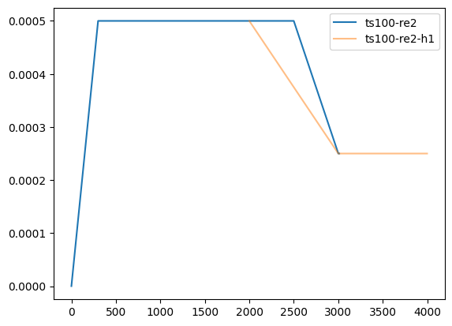

preliminary experiment for LLM distillation and pretraining
This experiment is to verify the effectiveness of the various methods from papers.
Language Model on TinyStories
About this project
What is this project?
- This is a preliminary experiment for pretraining language model, and using distillation to accelerate training and improve performance. The experiment is to verify the effectiveness of the following method:
- Dearth-tiny is a LM trained based on TinyStories. This model can write short stories with children’s level vocabulary; it is not used for instruction QA.
What is the significance and purpose of this project?
- Obtain smaller models through distillation that can be run on CPU and mobile devices
- Compared with pruning methods like Sheared LLaMA, distillation allows more flexible model structure
- Compared with direct training, distillation may improve the effect and accelerate training
- Make the model deeper and have more layers, improving the effect to a certain extent
- Trying to make the model handle extremely long sequences
What is the limitation of this project?
- Due to the limitation of training data, this model can only generate short stories using very simple words, which means most language is out of distribution.
- The purpose of the TinyStories dataset is to serve as a sanity check, verifying the effect of the model and training process; the scope and knowledge of the data are very limited, so it does not require a large number of parameters to show a good performance.
The distillation and training process
About the model structure
- DeepNet: Amplify the residual connection so that the gradient of the layer close to the input will not be too small; allow a deeper model structure to improve the effect to a certain extent;
- LM_infinite: using the front attention window to make later tokens can attend to the front token with enough weights, preventing the out-of-distribution problem.
- Mistral: using attention window to solve long sequence problem (https://arxiv.org/pdf/2310.06825.pdf)
- Adding rotary position embedding to query and key vectors.
How to distill and train the model
- One training objective is to imitate the attention map and value, and the other is to imitate the logits.
- Using MSE loss for soft label and comparing logits between teacher and student, because according to the profiler’s result, softmax required by KL divergence is very time-consuming.
- Seqence length = 256, batch_size for distillation = 200, batch_size for training = 800
- 2k steps for distillation with 300 steps warmup, 2k steps for training.
- Using Sophia optimizer, peak lr = 5e-4, beta1 = 0.9, beta2 = 0.99, weight decay = 0.2.
What is the error that has been corrected?
- In the previous project about low-rank LM, the loss function is wrong, because it only checks the logits of the last token, causing a very slow and unstable training process. It is unreasonable to only check the last token’s logits, because the model is trained to predict the next token, not the last token, so every output is usable to estimate the loss.

Figure 1: shows each loss component. After 2000 steps, loss_soft and loss_mimic are not used in the training process.

Figure 2: learning rate for distillation and training.
Work in progress
What can be done to improve the effect? Why is the effect not good?
- The current PPL of the student model is 1.7, and the teacher PPL is 0.9.
- Need more training steps
- Need to experiment with more suitable learning rate with the new optimizer
Potential problems
- Compared with the teacher model, the student model has fewer parameters. If the student spend too much capacity on fitting the internal structure, it may be difficult to fit the hard label loss (the loss for the next token).
- Whether the distillation process, that is, learning the internal structure, can replace the fact that the model has experienced a large number of tokens; that is to say, is the ability of the large language model derived from the acquisition of attention map, or from the subtle internal representation that must learn from diverse and numerous training data?
What is the work in progress?
- Adjust the learning rate so that the training process can be intervened manually to adjust; avoid interrupting the training.
- Distill 7B into 1B, and then compare it with other 1B models
- Instruction fine-tuning.
What is the future work?
- PPO for alignment.
- Memory-augmented model, adding memory to improve the effect of the model; the memory stored in the database can make the model more controllable and may reduce the hallucination caused by the memory stored in the parameters.